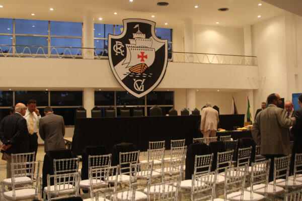
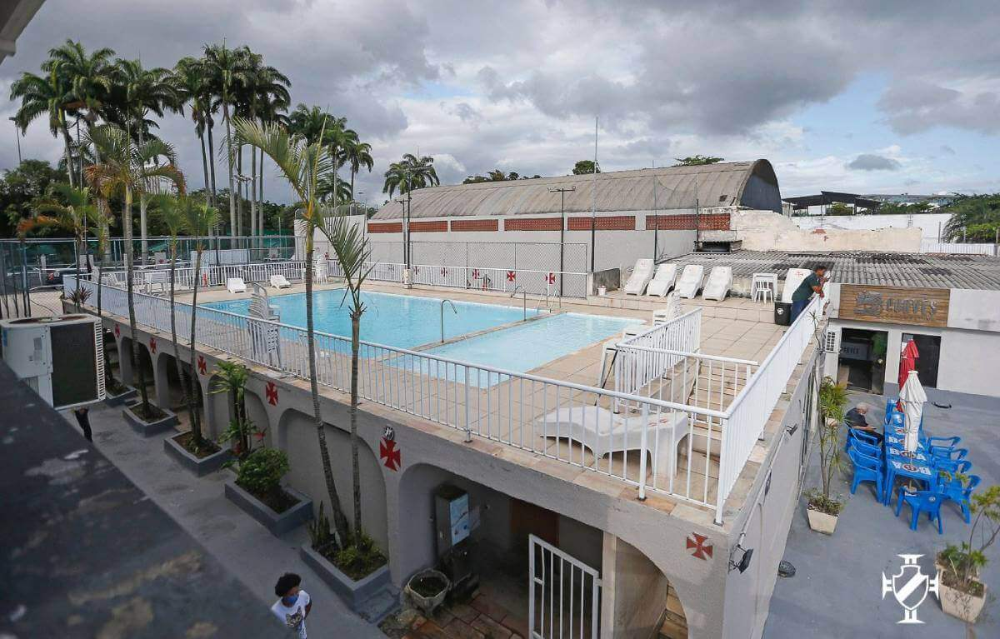

São Januário
Rua General Almério de Moura, 131 - Vasco da Gama


O lugar que o Vasco da Gama ocupa na elite do futebol brasileiro tem a marca gloriosa do time conhecido como os camisas negras que, em 1923, com uma campanha arrasadora (11 vitórias, dois empates e apenas uma derrota), conquistou o primeiro titulo de campeão carioca de sua História. Com o uniforme preto – ainda sem a faixa diagonal – de gola branca e com uma cruz vermelha, semelhante à da Ordem de Cristo, no lado esquerdo do peito, Nélson, Leitão e Mingote; Nicolino, Claudionor e Artur; Paschoal, Torterolli, Arlindo, Cecy e Negrito foram os 11 vascaínos abusados, alguns deles negros e mulatos, que quebraram definitivamente a hegemonia de América, Fluminense, Botafogo e Flamengo, clubes nos quais atuavam somente jogadores brancos.
Rua General Almério de Moura, 131 - Vasco da Gama
Rua General Tasso Fragoso, 65 – Lagoa
Rua Jardel Jercolis, s/nº – Centro
Rodovia Washington Luís (Rio-Petrópolis), Km 1,5 - Caxias